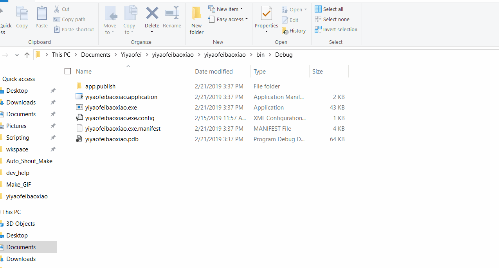

医药费报销Windows桌面应用开发笔记
最新更新时间: 2019-02-19
开发者：陈默
作者：陈默
开发简介
该项目旨在开发一个可以录入报销金额的Windows桌面应用。使用C#语言制作。
通过与本地磁盘上的某个xls工作簿相关联，读取用户信息，然后启动界面。在主界面中进行业务选择，可以选择数据表管理、金额录入、数据表导出等操作。
用户界面展示：研发阶段。输入金额后自动结算，随后在“大写”一栏里展示中文数字大写。考虑到金额大小限制，最大上限被锁定在百万级别。在这个演示中，可以看到字体的问题还未解决。同时有一些表格线条粗细的不一致。这些细节将在最后被敲定。
目前开发进度未决。不知期望与部署后效果如何。
关于部署环境方面的问题，似乎发布包会自动展开并且下载安装需要的.Net Framework的组建。暂时没有遇到问题。
其他开发小项目相关需要继续了解。
版本号0.0.0.1
部署时间：2019-02-19
开发状态：进行中
目前软件处于开发初期阶段。里程碑设立在“可以正常完成一次工作循环”上。目前还无法实现。
新的研发目标为如下：
- 需要在录入之前制作一个主菜单。
- 已经确定三台部署客户端不需要互相连接。
- 花名册中的基本数据保留项目为：编号、姓名、身份证号、银行卡号，总共四项。
期望达到的效果如图所示：
主要添加一个发票的管理（群类），还有一个管理功能，比如关联excel表格以及录入、更新、以及删除新的用户数据条目。
与该应用相关：在含有“员工花名册”工作页的工作簿未找到时，显示报错还是强制使用app.xaml的config文件进行关联刷新。一般理解上是强制关联，否则退出比较合理，因为该应用必须要绑定有效的工作簿才可以进行正常的工作。（比如身份证号查询）
目前遇到的一个问题就是使用Microsof.Office.Interop.Excel服务读取Excel表格时效率低下。而在部署环境中很有可能没有安装Access，因此Interop服务也不可用。需要寻找某种可以直接映射成DataSet对象的方法。未测试Microsoft.JET.OLEDB.4.0的数据库引擎是否可以提高查询效率，因开发环境不适应造成。如果使用直接的二进制数据库，将无法进行执行文件与数据源分离，意味着每次写入或者更改数据都必须要重新编译。
执行测试：应用启动行为：读取关联excel表格。表格简化为仅录入四项关键数据。关键点是获取读取速度与效率。
也许需要一个新的界面与Debug信息版界面。
应用启动阶段行为：
- 试图读取配置文件，如果没有找到（损坏或被删除），初始化默认配置文件，并读取。
- 读取关联xls表格路径，如果没有找到，初始化指定位置。
- 读取关联xls表格，以单元格为单位显示进度条。
- 读取完毕，显示主菜单
使用Interop服务读取excel用时
17列时：00:01:19.76
4列时：00:00:12
是一种极为缓慢而低效的方法。在纯数据取得的场合下，还是希望使用OLEDB驱动引擎。目前论证结论是开发环境可用，而部署环境未知。待测试。
异步处理显示进度条
似乎无法绕开使用异步处理的方法进行。否则进度条将会在所有任务线程完成之后一起更新。引用异步处理之后，进度条正常显示。如图：
现问题主要有两方面，一个是读取速度过低。期望在3秒以内。 第二个是如何保存数据表到本地。
之前调查的结果是只有JET.OLEDB.4.0能够读取32bit的xls格式。 现在确认本机有数据库驱动ACE.OLEDB.12.0，检查是否可以读取该xls格式。
如何检查数据库驱动列表，详见该网页：
List all Ole DB Providers in Powershell下载ACE数据库引擎链接（微软官网下载）：
Microsoft Access Database Engine 2010 Redistributable应该需要重启，试试看重启之后是否还有报错。
提示引擎在本地机器上未被注册，但事实上确认安装时，将Debug里面的prefer 32 bit取消勾选，即可使用。
如果还有报错，但不是类似于“在这台机器上未被注册”类型的错误。请检查连接字符串是否有格式等的错误。
经过调整，已经可以使用数据库引擎。读取速度在一秒以下。
在部署的过程中如果可以使用数据库引擎，应当尽量使用数据库引擎。但是可能遇到的问题有：
- 部署环境操作系统为32位，将无法使用ACE数据库引擎。
- 部署环境的目标工作簿为32位的工作表，将无法使用ACE数据引擎或引起其他报错。
关于是否在报错情况下回滚至采用Interop服务的问题。目前意见是不可以。采用Interop不仅是读取时间长的问题，还有一个
是无法保证在整个应用报错的情况下解锁内存里的工作簿对象。这样的问题就是会产生大量的Excel临时文件，造成用户困难。极端情况下还会终止其他正在使用的工作簿，造成数据损失。
进行配置文件的管理
与配置文件相关的文档参考以下
Application-wise Global Variable in WPF目前的计划是将连接字符串与数据库路径等参数导入到Application.Current.Properties中。该动作覆盖设置文件的建立小项目。
版本号0.0.0.2
部署时间：无
开发状态：未开始